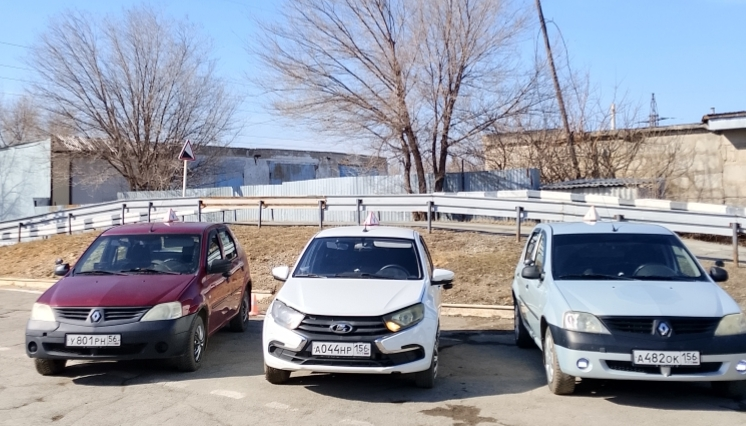
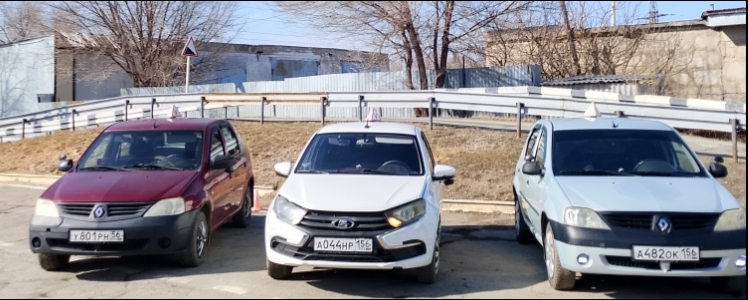
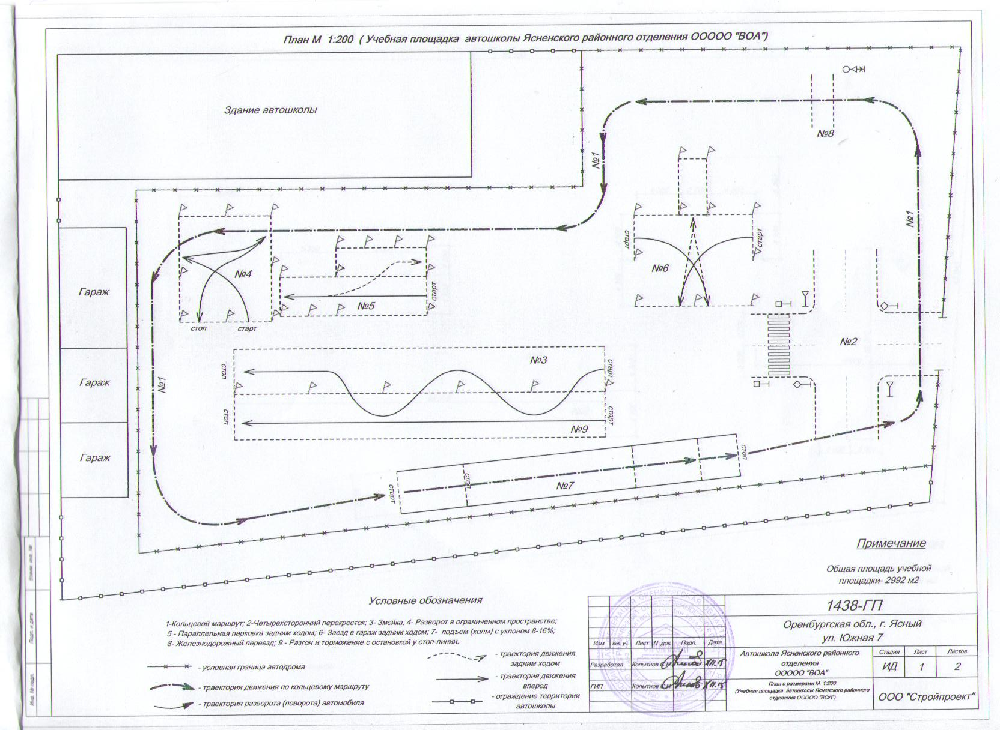

Документация
Документы образовательной организации
Раздел собран по структуре, которую ты утвердил. Файлы можно открывать напрямую с хостинга без дополнительной сборки.
Основные сведения
Структура и органы управления
Документы
- Устав ВОАPDFОткрыть
- Лицензия на осуществление образовательной деятельности (выписка из реестра)PDFОткрыть
- Отчет о самообследовании за 2025 годDOCXОткрыть
- Правила внутреннего распорядка обучающихсяDOCXОткрыть
- Правила внутреннего трудового распорядка работниковDOCXОткрыть
- Положение о защите персональных данныхDOCXОткрыть
- Положение о конфликтной комиссииDOCОткрыть
- Положение о промежуточной аттестацииDOCОткрыть
- Положение об итоговой аттестацииDOCОткрыть
- Правила приема, выпуска и отчисления обучающихсяDOCОткрыть
- Правила возникновения и прекращения отношений с обучающимисяDOCXОткрыть
- Режим занятий обучающихсяDOCXОткрыть
- Документы на землю и сооруженияPDFОткрыть
- Заключение МЧСPDFОткрыть
- Заключение СЭСPDFОткрыть
- Заключение ГИБДДФайл не приложен
- Предписания органов, осуществляющих государственный контроль (надзор) в сфере образованияФайл не приложен
Образование
- Уровень образования, форма и сроки обученияDOCXОткрыть
- Программа профессиональной подготовки водителей ТС категории «В»DOCXОткрыть
- Программа профессиональной подготовки водителей ТС категории «В» (для лиц до 18 лет)DOCXОткрыть
- Учебный план подготовки водителей категории «В»DOCXОткрыть
- Календарный учебный график по категории «В»DOCXОткрыть
- Режим занятий обучающихсяDOCXОткрыть
- Образец договора об оказании платных образовательных услугDOCXОткрыть
Форма обучения: очная. Срок обучения: 3 месяца по образовательной программе. Язык обучения: русский.
Образовательные стандарты
- Образовательный стандарт по профессии водитель транспортного средства категории «В»PDFОткрыть
Руководство. Педагогический состав
- РуководствоDOCXОткрыть
- Педагогический составDOCXОткрыть
- Должностная инструкция председателяDOCXОткрыть
- Должностная инструкция преподавателяDOCОткрыть
- Должностная инструкция мастера производственного обучения вождениюDOCОткрыть
- Должностная инструкция главного бухгалтераDOCXОткрыть
- Должностная инструкция секретаря учебной частиDOCXОткрыть
- Должностная инструкция уборщика служебных и производственных помещенийDOCXОткрыть
Материально-техническое обеспечение и оснащённость образовательного процесса
- Материально-техническое обеспечение (краткая версия)DOCXОткрыть
- Материально-техническое обеспечение (полная версия)DOCXОткрыть
- Геодезические измерения учебной площадкиDOCXОткрыть
- План учебной площадкиDOCXОткрыть
- Результаты измерения освещенности учебной площадкиPDFОткрыть



Стипендии и иные виды материальной поддержки
- Отдельные документы для раздела не прикреплены.
Платные образовательные услуги
- Положение об оказании платных образовательных услугDOCXОткрыть
- Договор на оказание платных образовательных услугDOCXОткрыть
- Стоимость платных образовательных услугDOCXОткрыть
- Приказ о стоимости обучения на 2026 годPDFОткрыть
Стоимость обучения на 2026 год: 45 000 ₽ по программе подготовки водителей категории «В» (механическая трансмиссия).
Финансово-хозяйственная деятельность
- Раздел оставлен без наполнения.
Вакантные места
- Отдельные документы для раздела не прикреплены.